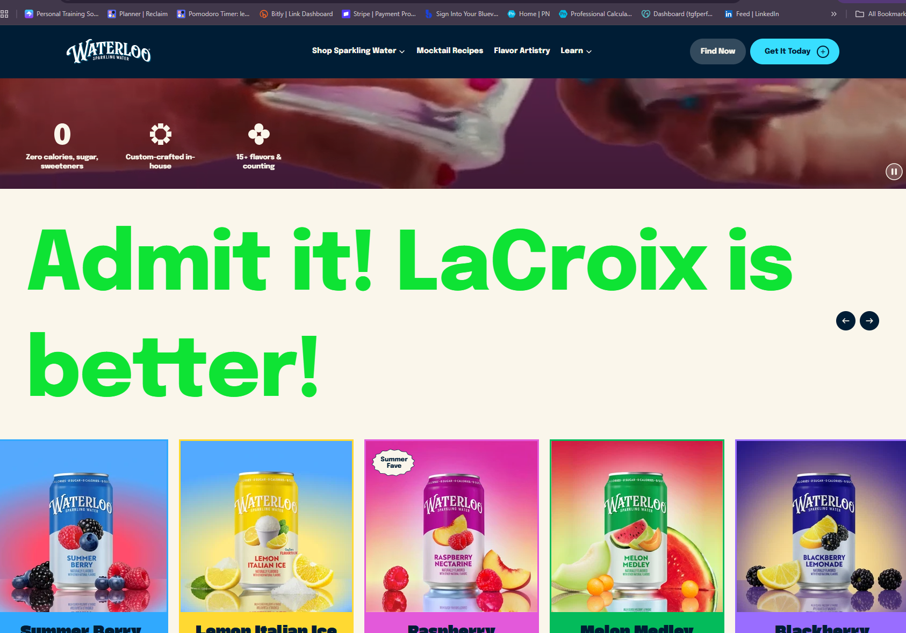

My Dev Tools Vandalism
I used browser developer tools to temporarily "vandalize" a website. The website I chose to vandalize is the Waterloo sparkling water website. I changed the color of the header text to lime green and font size to 40. I most notibably reworded the text on the page to say "Admit it! Lacroix is better!" I think what made my edit amusing is that I made my statement stand out by changing the color and size of the text. I will admit that their homepage has a lot going on but I chose this page simiply, because I'm currently drinking a can of waterloo sparkling water. I do have a better grasp on how HTML and CSS work together to make changes to a webpage. I also have a better understanding of how dev tools can be used to make changes to a webpage, and how those changes can be used to improve the user experience.
